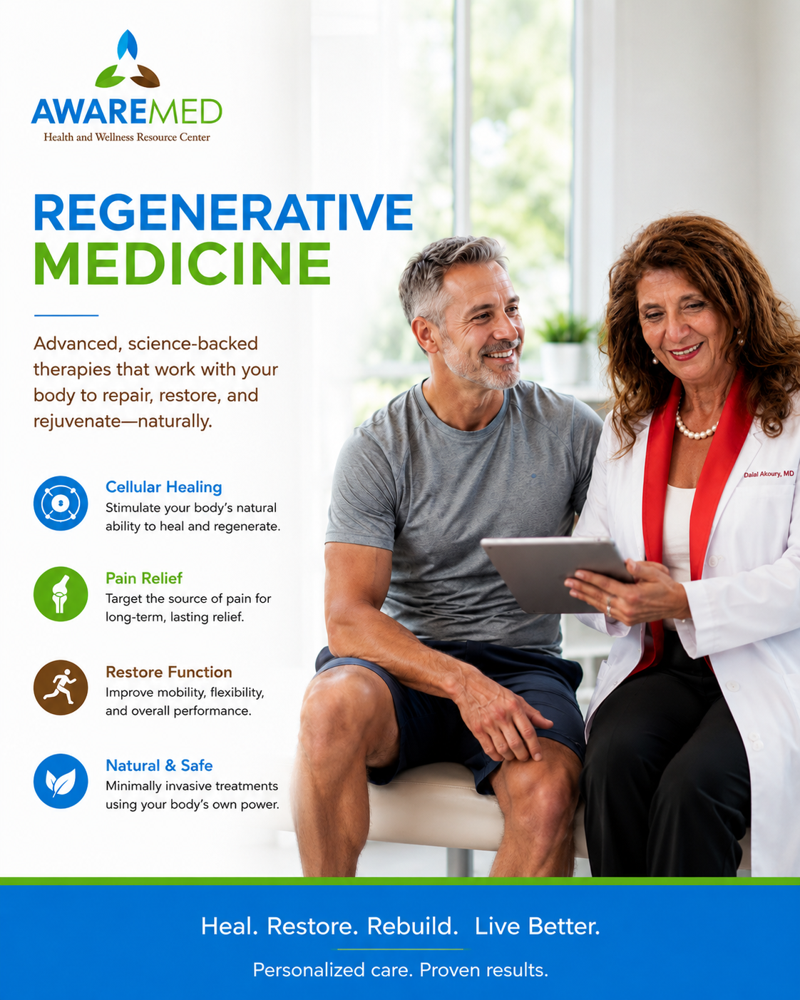

Regenerative Medicine
Physician-led regenerative approaches designed to support your body's natural healing capacity, enhance vitality, and promote healthy aging at the cellular level.

Regenerative Medicine at AWAREmed
Advanced, science-backed therapies that work with your body to repair, restore, and rejuvenate naturally.
Cellular Healing
Stimulate your body's natural ability to heal and regenerate at the cellular level.
Pain Relief
Target the source of pain for long-term, lasting relief without reliance on medication.
Restore Function
Improve mobility, flexibility, and overall performance for a better quality of life.
Natural & Safe
Minimally invasive treatments using your body's own power to support healing and recovery.
What Is Regenerative Medicine?
Regenerative medicine is a rapidly evolving field that focuses on supporting the body's inherent capacity to heal, restore function, and resist the effects of aging. Rather than simply managing symptoms, regenerative approaches aim to address the underlying cellular and tissue conditions that contribute to chronic illness, pain, and age-related decline.
At AWAREmed, Dr. Dalal Akoury, MD applies integrative regenerative principles within a personalized, whole-person framework. She evaluates your unique biology, including cellular health markers, inflammation levels, hormonal balance, nutritional status, and mitochondrial function, to design a regenerative protocol tailored to your specific health goals.
Regenerative medicine at AWAREmed is supportive and complementary. It does not replace conventional medical care but enhances it with approaches that address root causes of cellular dysfunction and promote long-term vitality.
Potential Benefits
While individual responses vary and no specific outcomes can be guaranteed, this service may support:
Who May Benefit?
This service may be appropriate for individuals including:
- Individuals experiencing chronic pain or musculoskeletal conditions
- Those interested in healthy aging and longevity medicine
- Patients recovering from illness, surgery, or injury
- Anyone with chronic fatigue or reduced physical resilience
- Those seeking to optimize cellular health and performance
- Patients with chronic inflammatory conditions
The Treatment Process at AWAREmed
Dr. Akoury begins with a comprehensive evaluation that includes detailed lab work assessing inflammation markers, oxidative stress, mitochondrial function, hormonal balance, and nutritional status. Based on these findings, she designs a regenerative protocol that may include targeted nutritional therapies, IV nutrient support, peptide therapies (where applicable), hormonal optimization, detoxification support, and lifestyle medicine. Follow-up evaluations ensure ongoing adjustment and optimization.
Frequently Asked Questions
Related Services
Hormone Optimization (BHRT)
Discover how this service can support your health journey.
Learn more →Integrative Oncology Support
Discover how this service can support your health journey.
Learn more →Chelation & Detoxification Support
Discover how this service can support your health journey.
Learn more →Take the First Step Toward Better Health
Book a consultation with Dr. Dalal Akoury, MD to discuss a personalized, whole-person care plan.